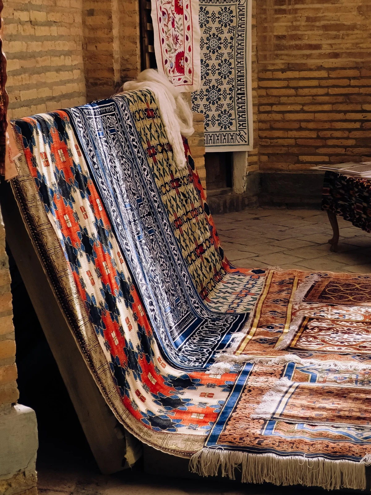

Eventi e presentazioni
Selezioni definite in relazione allo spazio, alla durata e all’impostazione visiva dell’evento.
Selezioniamo tappeti persiani e orientali per eventi, fotografia, cinema, moda, showroom, scenografie e installazioni temporanee. La proposta viene costruita in base allo spazio, alla durata, alle misure e alla direzione visiva del progetto.
Showroom a Cinisello Balsamo · Servizio da concordare nell’area di Milano

Colore, dimensione, disegno e proporzioni cambiano il modo in cui un tappeto dialoga con lo spazio, le luci, le persone e la scenografia. Per questo la selezione viene preparata a partire dal brief, non da un elenco generico.
Fotografie dello spazio, misure, palette, riferimenti visivi e durata del progetto permettono di restringere la scelta prima della visione in showroom.
Selezioni definite in relazione allo spazio, alla durata e all’impostazione visiva dell’evento.
Tappeti scelti per fondali, ambientazioni e composizioni fotografiche temporanee.
Proposte da valutare con scenografia, inquadrature, misure e tempi della produzione.
Elementi tessili per styling, shooting, presentazioni e progetti editoriali.
Selezioni per spazi espositivi e installazioni che richiedono proporzioni e colori precisi.
Tappeti inseriti in ambienti temporanei sulla base del brief e delle condizioni d’uso.
Le informazioni iniziali non costituiscono una prenotazione. Disponibilità e condizioni vengono confermate nel preventivo.
Riceviamo date, misure, luogo, durata e riferimenti visivi del progetto.
Individuiamo tappeti compatibili per dimensioni, colori e stile.
La selezione viene verificata in showroom oppure attraverso il materiale concordato.
Definiamo disponibilità, durata, costi, ritiro, consegna e condizioni del servizio.
Al termine del progetto vengono concordati tempi e modalità di restituzione.
Disponibilità, durata, costi, modalità di trasporto e condizioni di utilizzo vengono definite nel preventivo. Eventuali esigenze particolari devono essere comunicate prima della conferma.
In showroom è possibile confrontare la selezione e verificare dal vivo disegni, tonalità e proporzioni. Per evitare visite inutili, consigliamo di inviare prima il brief e le date del progetto.
Invia il brief
Disponibilità, logistica e condizioni vengono definite soltanto dopo aver ricevuto il brief.
Il costo dipende dal tappeto, dalla quantità, dalla durata, dal luogo e dalla logistica richiesta. Il preventivo viene preparato dopo aver ricevuto le informazioni sul progetto.
Data, luogo, durata, misure dello spazio, numero indicativo di tappeti, palette e fotografie o riferimenti visivi.
Sì. Dopo una prima selezione è possibile concordare una visione in showroom.
Possono essere organizzati in base al luogo, agli orari, alla quantità e alle caratteristiche del progetto. Modalità e costi vengono indicati nel preventivo.
Sì. La selezione può essere preparata per fotografia, video, cinema, moda, scenografie e produzioni temporanee.
È consigliabile inviare la richiesta appena sono disponibili date e misure. La disponibilità viene verificata per il periodo indicato.
Con le informazioni essenziali possiamo capire quali misure, colori e tipologie valutare prima della visione in showroom.